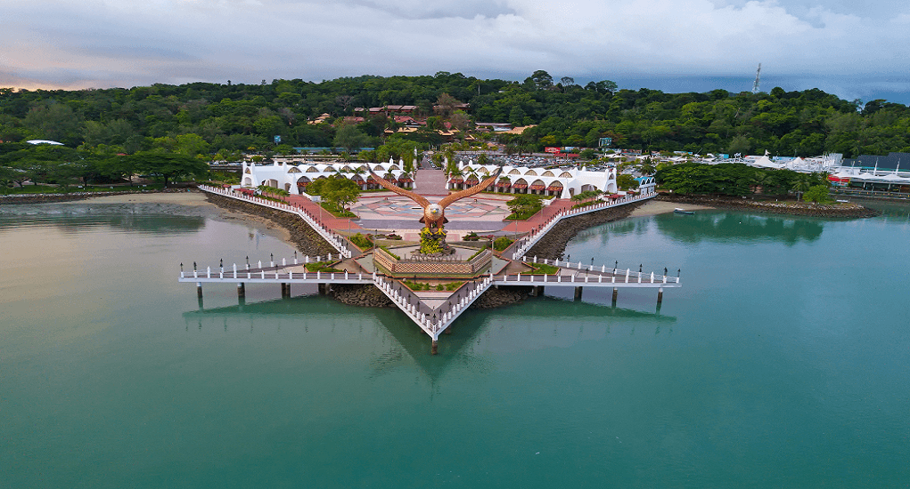
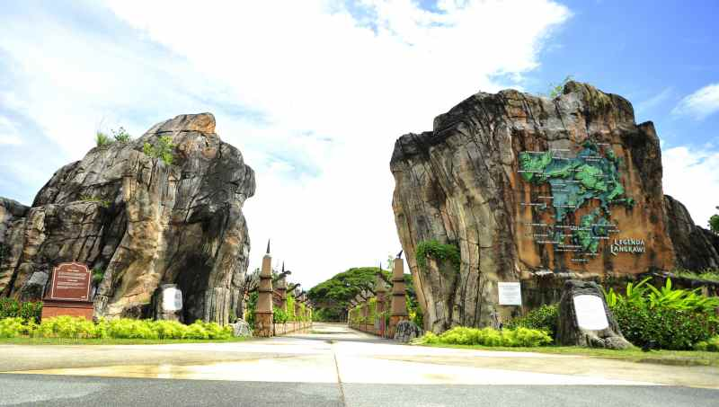
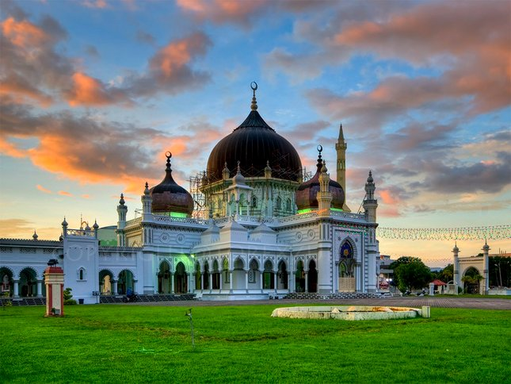
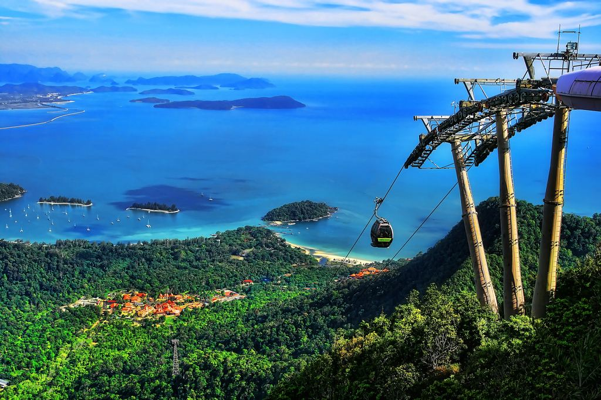
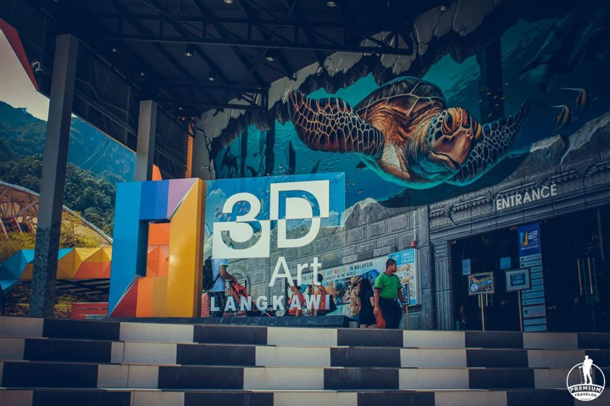

Kedah State covers a section of the Malay Peninsula and the famously duty-free Langkawi Island. World-acclaimed Langkawi receives the vast majority of the state’s tourists, home to beautiful beaches, verdant hills and a colourful nightlife scene. As an alternative, the dazzling white-sand beaches of Pantai Cenang provide the perfect place for relaxation, especially with cheap cocktails in beachside bars overlooking the gentle sea. Mainland Kedah offers a completely different travel package. Alor Setar’s modern city centre blends decorative, traditional and Islamic styles of architecture, while paddy fields forming the famous ‘Rice Bowl of Malaysia’ stretch towards the horizon.

Pulau Langkawi
Langkawi, officially known as Langkawi, the Jewel of Kedah, is a district and an archipelago of 99 islands in the Andaman Sea some 30 km off the mainland coast of northwestern Malaysia. The islands are a part of the state of Kedah, which is adjacent to the Thai border.

Lagenda Park, Langkawi
Lagenda Park (or Taman Lagenda as known in Malay) stands for the Park of Legends. Indeed this beautiful parkland spreading over 20 hectares of area has been themed on folklore and myths from the prehistoric era to the modern times of Langkawi.

Masjid Zahir, Alor Setar
The Zahir Mosque is a mosque in Alor Setar, Kota Setar, Kedah, Malaysia, and the state mosque of the state of Kedah. The Zahir Mosque is one of the grandest and oldest mosques in Malaysia, having been built in 1912. The Zahir Mosque has been voted as one of the top 10 most beautiful mosques in the world.
Address: Jalan Kampung Perak, Bandar Alor Setar, 05150 Alor Setar, Kedah

Langkawi Skybridge cable car
The Langkawi Cable Car, also known as Langkawi SkyCab, is one of the major attractions in Langkawi Island, Kedah, Malaysia. It provides an aerial link from the Oriental Village at Teluk Burau to the peak of Gunung Machinchang, which is also the location of the Langkawi Sky Bridge.
Jalan Telaga Tujuh, 07000 Langkawi, Kedah

3D Art in Paradise Langkawi
Interactive 3D museum featuring many elaborate paintings & murals offering optical illusions. Address: Jalan Telaga Tujuh, 07100 Langkawi, Kedah